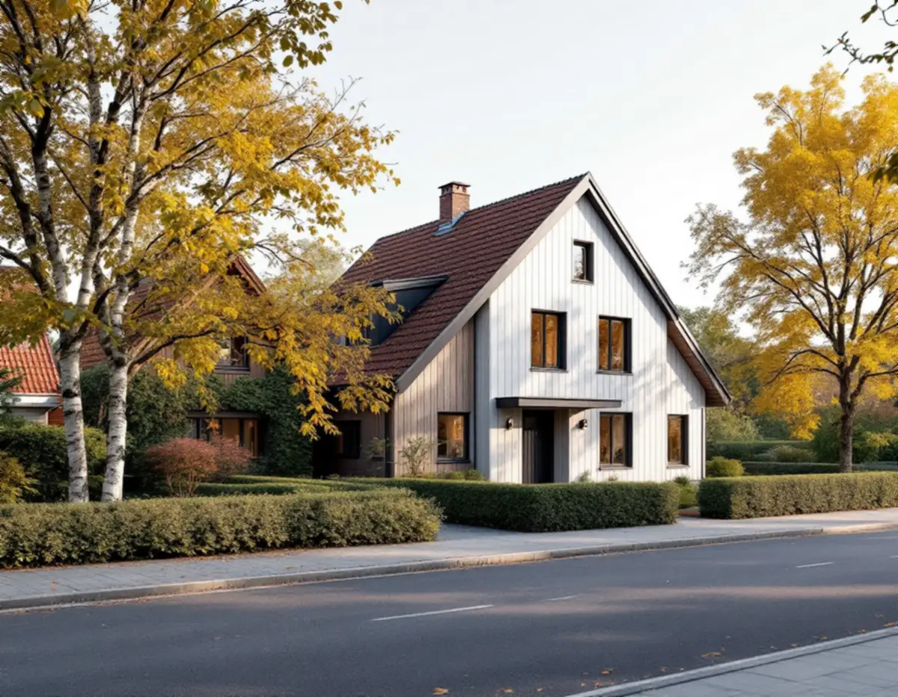
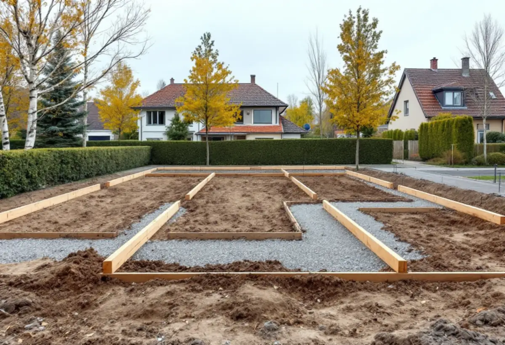

Platsbesök
Vi går igenom huset som ska bort, tomten, träden och grannarnas hus.
Hässelby villastad har förändrats i omgångar: stora tomter har delats, äldre villor har ersatts och nya hus har byggts mellan de gamla. Står du inför att riva ett uttjänt hus eller bygga på en avstyckad del av tomten är det ett nybygge med allt vad det innebär. Geal Entreprenad AB tar sådana projekt som total entreprenad, och här är ordningen som Stockholms stad kräver.

I Stockholms stads vägledning Varsam utveckling av småhus- och villaområden räknas Hässelby villastad till typen villastad, tillsammans med bland annat Bromsten, Mariehäll och Mälarhöjden. De första planerna gav fritt liggande hus på tomter om 1 500–3 000 kvadratmeter, och när nya planer togs fram under 1930-talet blev tomterna 700–1 000 kvadratmeter.
Vägledningen beskriver hur många villor på 1960- och 1970-talen ersattes av täta, sammanhållna grupper av småhus, bland annat i Hässelby villastad. Genom att tomter successivt har delats har nya hus på tomter kring 600 kvadratmeter kompletterat eller ersatt den äldre bebyggelsen, och förtätningen tog ny fart under 2010-talet. Därför kan ett byggprojekt här lika gärna gälla ett helt nytt hus som en tillbyggnad.

Inom detaljplan krävs rivningslov för att riva en byggnad eller en del av en byggnad. I prövningen gör staden en samlad bedömning av om byggnaden bör bevaras med hänsyn till sitt historiska, kulturhistoriska, miljömässiga eller konstnärliga värde och om rivningen stämmer med detaljplanen. Ska ett hus flyttas krävs rivningslov på den gamla platsen och bygglov på den nya.
En byggnad som får byggas utan bygglov, till exempel en friggebod, kan rivas utan rivningslov om den eller området inte är särskilt kulturhistoriskt värdefullt. Behövs inget rivningslov men byggnadsarean är större än 50,0 kvadratmeter ska rivningen i stället anmälas. Vid det tekniska samrådet går staden bland annat igenom hur förekomsten av farligt avfall har inventerats, och den inventeringen ska vara gjord innan första väggen tas ned.
En ny byggnad kräver bygglov. Redan i ansökan ska det enligt Stockholms stad finnas ett förslag på kontrollansvarig, och den som söker ansvarar för att den föreslagna har åtagit sig uppdraget. Situationsplanen ritas på en nybyggnadskarta, som visar fastigheten, markhöjder, planbestämmelser och anslutningarna för vatten och avlopp.
Staden ska besluta inom tio veckor från att ansökan bedömts komplett och kan förlänga med ytterligare tio veckor. Staden skriver också att det just nu tar längre tid än vanligt att få en handläggare. Även när startbeskedet kommer samtidigt med lovet ska man vänta fyra veckor efter att beslutet kungjorts innan bygget börjar. Bygget ska påbörjas inom två år och vara färdigt inom fem år från beslutsdatum.
Vägledningen för villastaden ger stöd för utformningen. Ett nytt huvudhus ska inordna sig i områdets planstruktur, anpassas till terrängen om tomten är kuperad och ha en volym och proportioner som samspelar med husen intill. Staden vill också undvika fler utfarter bredvid varandra och att grönytor hårdgörs, vilket påverkar var garage och parkering hamnar på en delad tomt.
Inom detaljplan krävs marklov om marknivån höjs eller sänks mer än 0,5 meter. Markändringen får inte leda dagvatten in på en annan fastighet, eftersom dagvattnet ska tas om hand på den egna tomten. Staden tipsar om e-tjänsten Ledningskollen för att få veta var ledningar går innan man gräver, och om berg ska sprängas eller spräckas kan även det kräva marklov.
Detaljplanen kan också kräva marklov för att fälla träd eller förbjuda trädfällning helt, och det gäller oavsett om trädet är levande, sjukt eller dött. Mycket stora, gamla eller grova hålträd räknas som särskilt skyddsvärda, och då ska man samråda med länsstyrelsen innan trädet fälls eller beskärs. Vill du hellre bygga ut det befintliga huset, läs om tillbyggnad och om nybyggnad av villa.
Vi går igenom huset som ska bort, tomten, träden och grannarnas hus.
Detaljplan och Stadsmuseets karta visar vad som får rivas och byggas.
Rivning, mark, grund, stomme och installationer redovisas var för sig.
Ansökan lämnas med nybyggnadskarta och förslag på kontrollansvarig.
Kontrollplan och inventering av farligt avfall gås igenom med staden.
En kontakt för hela bygget fram till slutbeskedet.
Rotavdraget är 30 procent av arbetskostnaden, högst 50 000 kronor per person och år och högst 75 000 kronor tillsammans med rutavdrag, och det gäller bara arbete på en bostad du äger.
Skatteverket godkänner inte att riva ett hus, inte ens om ett nytt byggs upp på den gamla stommen, och ett helt nytt hus ger inte heller avdrag. Bygger du i stället om eller till det hus du har kan arbetet ge rotavdrag. Det redovisar vi tydligt i kostnadsförslaget.
Rivningens omfattning, hur mycket farligt avfall som finns, markförhållandena och husets storlek väger tyngst. Efter ett gratis platsbesök får du ett skriftligt kostnadsförslag.
Total entreprenad för villan.
Byggfirma →Takbyte, takbesiktning och plåtarbeten.
Takläggare i Hässelby →Villastaden, Hässelby strand och gård.
Takrenovering i Hässelby →Källarbadrum, backventil och bostadsrätt.
Badrumsrenovering i Hässelby →Villastaden och radhusen.
Fasadmålning i Hässelby →Villastad, sommarstugor och grupphus.
Fasadrenovering i Hässelby →Slipa trägolvet – eller lägga nytt.
Golvläggare i Hässelby →Villastad, grupphus och radhus i Hässelby.
Målare i Hässelby →Plåttak efter eternit, rännor och beslag i Hässelby.
Plåtslagare i Hässelby →Altan, bod och plank i villastaden och radhusen.
Snickare i Hässelby →Eternit och asbest på taket.
Takbyte i Hässelby →Ny tapet i grupphus och villor.
Tapetsering i Hässelby →Grupphusen, eterniten och ventilationen.
Totalrenovering i Hässelby →